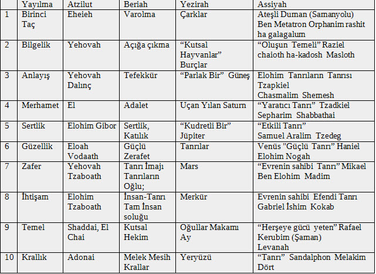

Bu tablo, çeşitli farklı tabolardan, Grifasian sentezi esas alınarak,
birçok çelişkili tablodan daha basit ve anlaşılabir olması amaçlanarak hazırlanmıştır.
Bu hiyerarşinin bölüm ve nitelikleri, dünya üzerindeki farklı inançlarda da
aynı gezegenler ve anlayışlar için geçerli olduğu için, Grifasian sistemi karşılaştırmalı
teoloji sentezlerine temel kabul edilmektedir.